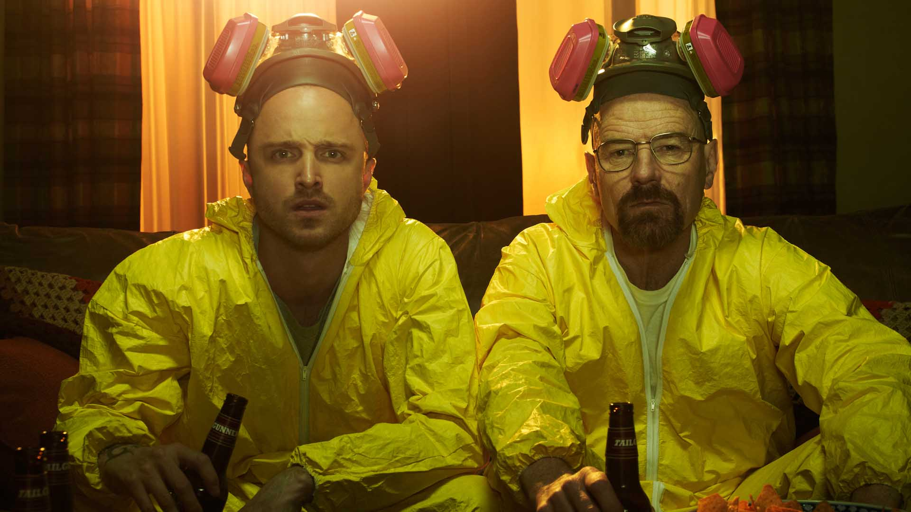

breaking bad

Este apartado de la pagina te va a mostrar los capitulos mejor puntuados de breaking bad!
Breaking Bad es una serie dramática que sigue la historia de un profesor de química, Walter White, quien al ser diagnosticado con cáncer decide empezar a fabricar y vender metanfetamina para asegurar el futuro económico de su familia. A lo largo de la serie, se transforma poco a poco en un peligroso criminal, mostrando cómo el poder, el dinero y las decisiones morales pueden cambiar completamente a una persona.